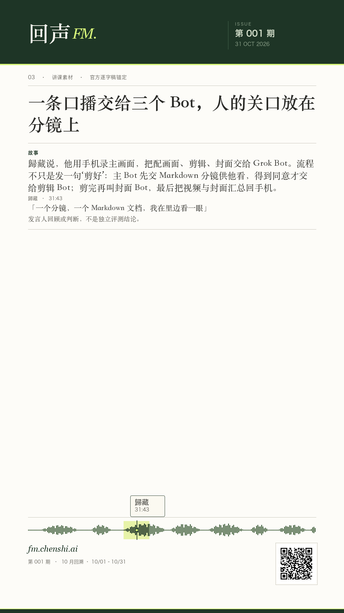

03第 001 期讲课素材10.19官方逐字稿锚定
一条口播交给三个 Bot，人的关口放在分镜上
故事
歸藏说，他用手机录主画面，把配画面、剪辑、封面交给 Grok Bot。流程不只是发一句‘剪好’：主 Bot 先交 Markdown 分镜供他看，得到同意才交给剪辑 Bot；剪完再叫封面 Bot，最后把视频与封面汇总回手机。
「一个分镜，一个 Markdown 文档，我在里边看一眼」
发言人回顾或判断，不是独立评测结论。
节目溯源
Next Token｜词元之外
本期
第 001 期 · 31 OCT 2026 · 10 月回溯 · 10/01–10/31
